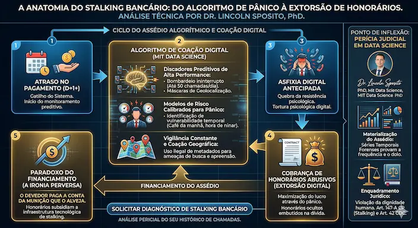

"Doutor, eu não atendo mais o celular. Tenho medo do meu próprio bolso."
Esta frase, ouvida em uma perícia técnica recente, resume a asfixia emocional causada pelo sistema financeiro. Mas o que a maioria não percebe é a ironia perversa: você paga a conta da munição que o alveja.
Aqueles "honorários de cobrança" embutidos na sua parcela não cobrem apenas custos administrativos. Eles financiam algoritmos de guerra.
Evidência Macro-Estatística: O Rastro da Asfixia Social
Como cientista de dados e PhD, analiso não apenas logs individuais, mas o comportamento da massa crítica. O gráfico em tempo real abaixo materializa a correlação direta entre o endividamento sistêmico e a explosão de buscas por socorro contra o assédio algorítmico e seus impactos devastadores na saúde mental nos últimos 5 anos no Brasil.
Análise do Perito: O aumento exponencial no termo "bloquear número" acompanha o rastro da "cobrança abusiva". Isso prova que o consumidor não está fugindo da dívida, mas tentando sobreviver ao assédio. A Perícia Digital é o que conecta esses pontos para o Juiz.
Fonte: Google Trends (Dados em tempo real). Correlação estatística por Dr. Lincoln Sposito.
O Mapa da Invasão: Onde o algoritmo te vence pelo cansaço
Analisei uma série temporal de 24 dias de atraso e converti registros em provas estatísticas. Os gráficos abaixo revelam a estratégia das assessorias:
1. O Bombardeio (Frequência)

As chamadas não são casuais. O gráfico mostra picos de 4 ligações por hora em janelas críticas, como a chegada em casa. É uma interrupção sistemática da sua paz a cada 15 minutos.
2. O Cerco Algorítmico (Escalada)

A cobrança escala de 2 para quase 50 chamadas diárias. É a transição da cobrança ética para o assédio psicológico projetado para quebrar sua resistência.
3. A Ocupação da Vida (Dispersão)

Onde há ponto vermelho, houve invasão. O algoritmo mapeia seu café da manhã, seu trabalho e o momento de ninar seus filhos. Não há janelas de silêncio.
Conexão Forense: O Stalking Bancário é a face visível de uma governança de dados corrompida. Sob a ótica da Resolução CMN 4.966, identificamos que o cerco digital é o resultado de modelos de risco mal calibrados que transmutam o monitoramento de crédito em assédio sistêmico. A auditoria desses algoritmos revela que a tecnologia, que deveria prever riscos, foi desviada para fins de coação psicológica e maximização do pânico.
Nesta análise, fica evidente que o consumidor, ao esperar uma negociação ética, é confrontado pela frieza da Engenharia da Coação. A perseguição não é reativa; ela é proativa e milimetricamente programada. O foco das instituições migrou da simples recuperação do crédito para a implementação da Asfixia Digital Antecipada.
É neste hiato entre a automação predatória e a dignidade humana que reside a prática abusiva das assessorias: elas lucram com um cerco ininterrupto, ironicamente financiado pelos próprios honorários cobrados da vítima. Onde o banco vê lucro na pressão, a Perícia Judicial identifica a violação fundamental do sossego e da privacidade.
A Visão do PhD e Cientista de Dados: Por que o Algoritmo é a Arma da Coação?
O Stalking Bancário não é um erro sistêmico; é uma Engenharia de Coação Digital. Como Analista de Sistemas com especialização em Data Science pelo MIT, identifico que a eficácia do assédio reside na sua invisibilidade técnica. Operar "debaixo do capô" das assessorias exige entender como os modelos preditivos foram calibrados para identificar seus momentos de maior vulnerabilidade, processando a sua exaustão mental em escala industrial.
Algoritmos de Exaustão
As assessorias utilizam Discadores Preditivos de Alta Performance, disparando até 50 chamadas/dia através de máscaras de geolocalização. O objetivo é claro: quebrar a resistência psicológica do cidadão através de um cerco ininterrupto.
Data Science Forense (MIT)
A perícia em Séries Temporais de Metadados materializa a frequência das incursões. Transformamos o "caos das ligações" em prova técnica inatacável para sustentar condenações por Stalking (Art. 147-A CP) e Danos Morais.
"No tribunal dos algoritmos, a defesa da dignidade humana depende da precisão da prova matemática, não apenas da indignação emocional."
Defesa contra a Opressão Sistêmica e Privacidade
O stalking bancário é o sintoma de um desrespeito profundo à integridade do consumidor. A mesma tecnologia que executa a Asfixia Digital pode camuflar falhas graves na proteção de dados e no compliance bancário. Conheça minha tese complementar sobre Perícia em Monitoramento de Conduta e Proteção de Dados (AML/KYC).
A Ciência contra o Abuso: Do 'Aborrecimento' à Prova Técnica
As assessorias usam discadores preditivos para te cercar. Mas onde existe algoritmo, existe rastro.
Como Dr. em Administração e Perito Judicial, eu utilizo a Perícia Digital para converter esse sentimento de perseguição em prova inatacável. Transformamos metadados em evidência jurídica de violação à dignidade (Art. 147-A do CP e Art. 42 do CDC).
- 01. Engenharia da Exaustão (Asfixia Digital): A tecnologia dos discadores preditivos é calibrada para ignorar a dignidade humana. Como Perito, identifico que o algoritmo processa o bombardeio como "eficiência", mas tecnicamente, isso configura um estado de vigilância constante que transmuta a dívida civil em tortura psicológica digital.
- 02. Coação Geográfica e Medo Digital: O uso de metadados para intimidar o consumidor com ameaças de busca e apreensão imediatas — sem ordem judicial — é uma deturpação da inteligência de dados. A perícia identifica quando a coleta de informações entra no campo do Stalking Bancário (Art. 147-A CP).
- 03. O Ciclo da Ironia Perversa: Exponho que os "honorários de cobrança" embutidos nas suas parcelas não são custos de papelaria. Eles são o combustível financeiro que paga os robôs e os algoritmos usados para retirar o seu sossego. Você está, literalmente, pagando pelo seu próprio assédio.

Diagnóstico Preliminar de Stalking Bancário
Validação de indícios de Asfixia Digital e Coação Algorítmica para fundamentação de prova técnica.
01. Análise de Frequência e Padrão de Abordagem:
02. Paradoxo do Financiamento (Análise de Decomposição de Valor):
03. Dano Existencial e Coação Psicológica:
O Olhar do PhD e Analista de Sistemas: A Autópsia da Coação Digital
Como PhD e Especialista em Data Science (MIT), minha atuação transcende a análise superficial de prints. Eu disseco a Engenharia da Coação escondida nos algoritmos de exaustão. Através da auditoria de Séries Temporais de Metadados e rastreabilidade de logs, materializo o nexo causal entre o bombardeio algorítmico e o dano existencial, provando que a Asfixia Digital não é um erro técnico, mas uma execução deliberada para sustentar o lucro predatório das assessorias.
* Esta investigação técnico-científica fundamenta-se em extração forense de metadados, análise estatística de séries temporais e auditoria de modelos de risco algorítmico, aplicada à defesa da dignidade humana e ao combate de abusos sistêmicos no setor financeiro sob a ótica da Perícia Judicial em Data Science.
Checklist de Admissibilidade: Auditoria Forense da Engenharia do Assédio
O enfrentamento ao Stalking Bancário exige a materialização do dolo algorítmico. Não fundamente sua peça apenas em alegações subjetivas: utilize evidências de Data Science Forense (MIT) e auditoria de metadados para provar a Asfixia Digital e a inclusão de honorários que alimentam o Paradoxo do Financiamento.
Baixar Protocolo de Viabilidade Técnico-PericialEscopo da Auditoria: A Anatomia Técnica do Dossiê
- ✔ Engenharia da Coação: Como identificar padrões de dolo algorítmico em discadores preditivos que configuram a Asfixia Digital (Art. 147-A CP).
- ✔ Nexo Causal em Séries Temporais: Metodologia forense para vincular a auditoria de metadados de logs à supressão da paz e ao dano existencial do consumidor.
- ✔ Auditoria do Paradoxo do Financiamento: Técnicas de decomposição analítica para isolar honorários ocultos que subsidiam a infraestrutura tecnológica de stalking.
- ✔ Quesitos de Admissibilidade Forense: Estruturação de interrogatório técnico para expor a parametrização de pânico dos modelos de risco em juízo.
Nota do Autor: Unindo o rigor do Data Science (MIT) à Perícia Judicial, este material materializa a prova científica do que antes era invisível: a má-fé codificada nos motores de cobrança e seu impacto na dignidade humana.
Nota do Autor: Unindo o rigor do Data Science (MIT) à Perícia Judicial, este material materializa a prova científica da má-fé codificada nos motores de cobrança.
Estratégia Jurídica Complementar: Para fundamentar pedidos de danos morais de alta monta, é vital transpor o dado técnico para a realidade existencial. Acesse o meu Dossiê de Impacto em Saúde Mental e aprenda como quantificar a Asfixia Digital em sua peça inaugural.

Dr. Lincoln Sposito
Doutor em Administração e Perito Judicial. Especialista em auditoria bancária e perícia financeira, utiliza rigor estatístico e Data Science para identificar assimetrias informacionais e garantir o reequilíbrio de contratos de crédito complexos.